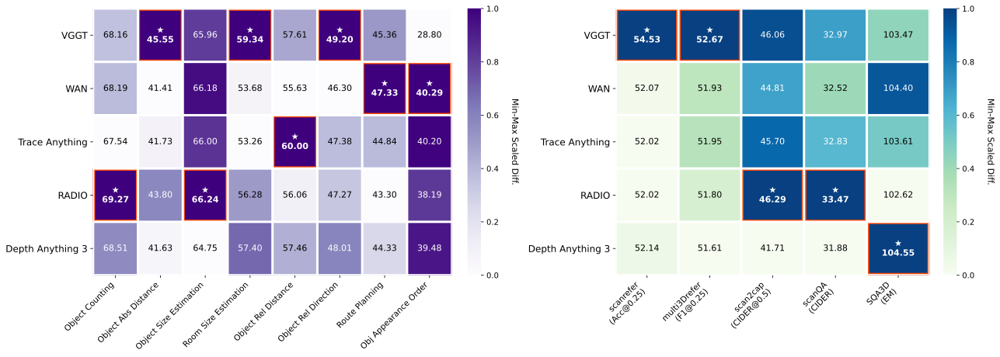
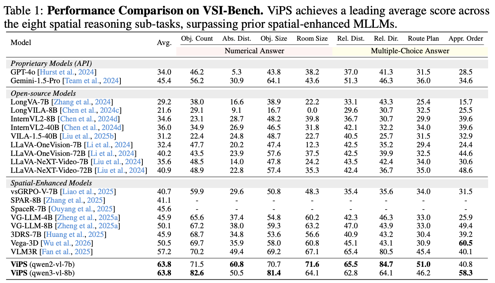
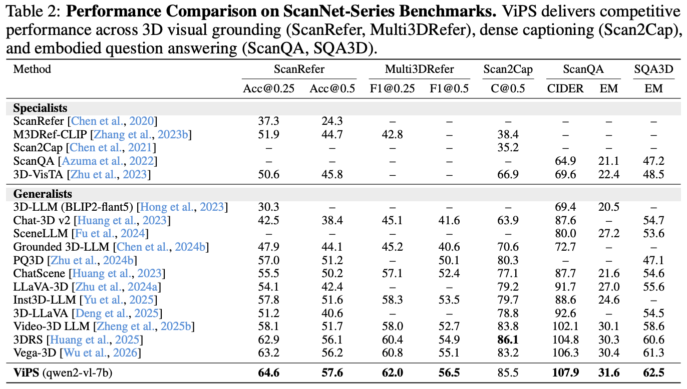

Abstract
Multimodal Large Language Models (MLLMs) have demonstrated substantial promise in spatial understanding. Existing works typically incorporate prior knowledge extracted from a pre-trained foundation model to further enhance the spatial awareness of MLLMs. In this paper, we first reveal that when integrating diverse foundation models into MLLMs, each model provides complementary spatial priors that benefit different tasks. Motivated by this, we propose ViPS, a novel multi-model prior framework designed to fully unleash the potential of incorporating multiple Visual Priors from diverse models into MLLMs for Spatial understanding. Specifically, ViPS introduces an Efficient Prior Proxy to generate multiple foundational priors with minimal inference overhead, and a Dynamic Prior Fusion mechanism to achieve harmonious and context-aware prior fusion and injection from the prior proxies. Extensive experiments demonstrate that ViPS successfully harmonizes diverse visual priors, establishing new state-of-the-art performance across multiple complex spatial reasoning and 3D spatial understanding benchmarks.
Motivation

Relative Performance of Diverse Foundation Models: Evaluating various foundation models as priors across spatial tasks reveals that no single model dominates all metrics, highlighting the necessity of integrating diverse multi-model priors.
Method
Overview of the Proposed ViPS Framework. The framework integrates distinct prior knowledge from multiple foundation models via the Efficient Prior Proxy and coordinates them using Dynamic Prior Fusion for comprehensive spatial reasoning.
Experimental Results


Performance Comparison: ViPS achieves state-of-the-art results on both VSI-Bench and ScanNet-series benchmarks, surpassing existing spatial-enhanced MLLMs across a wide range of complex spatial reasoning and 3D understanding tasks.
BibTeX
@misc{lin2026singleexpertharmonizingdiverse,
title={Beyond Single Expert: Harmonizing Diverse Visual Priors in MLLMs for Spatial Understanding},
author={Xiao Lin and Xiaohu Huang and Kai Han},
year={2026},
eprint={2607.15054},
archivePrefix={arXiv},
primaryClass={cs.CV},
url={https://arxiv.org/abs/2607.15054},
}